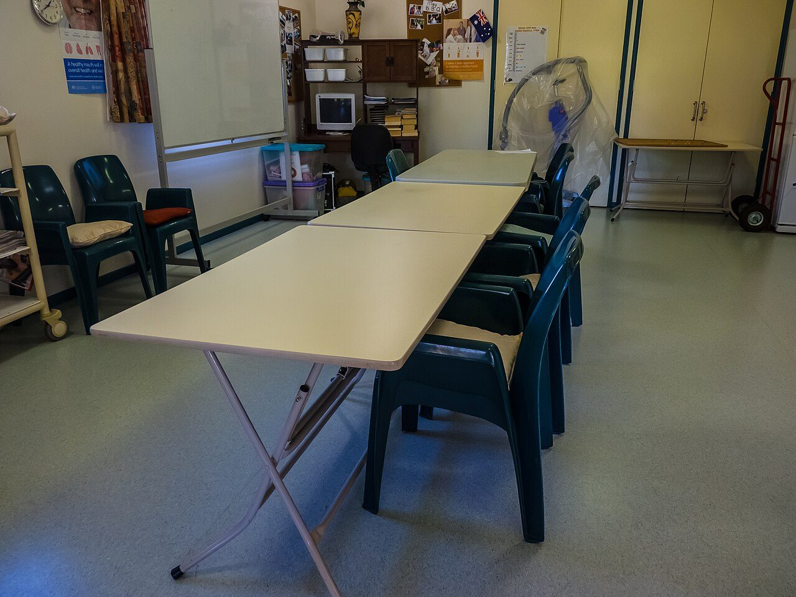
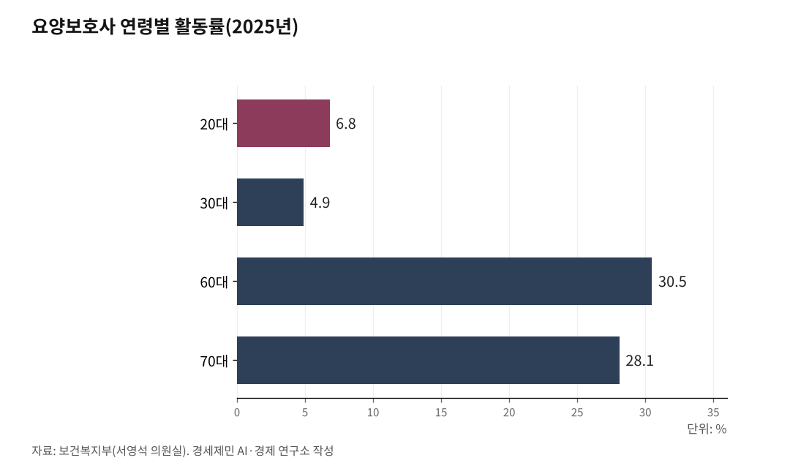

[한국경제 불편한 진실⑨] 돌봄 — 멈추면 나라가 멈추는데, 값은 최저임금 언저리
무급 가사·돌봄노동만 한 해 582조원, 국내총생산의 22.8%
그 값의 73%는 여성 몫, 방문요양보호사 월급은 107만원이다
값싼 외국인으로 메우려던 가사관리사 사업은 1년 만에 막을 내렸다
AI경세제민=김갑봉 기자 | 돌봄은 통계에 잘 잡히지 않는다. 밥을 짓고 씻기고 약을 먹이고 아이를 안고 노인을 부축하는 일에 값을 매기지 않는다. 그러나 이 노동이 멈추면 나라가 멈춘다. 국가데이터처가 2026년 4월 29일 발표한 가계생산 위성계정(소득 통계에 안 잡히는 무급 가사노동을 화폐로 환산한 지표)을 보면, 2024년 무급 가사·돌봄노동의 가치는 582조4000억원이다. 명목 국내총생산(GDP)의 22.8%에 이른다. 보이지 않을 뿐, 경제를 떠받치는 토대다.

값을 안 매긴 582조원
가계생산 위성계정을 보면 2024년 무급 가사·돌봄노동 가치는 582조4000억원으로 5년 전인 2019년 485조원보다 20.0% 늘었다. 국민 1인당 1125만원어치를 해마다 무급으로 일한 셈이다.
시장에서 같은 일을 사면 그만큼 돈이 든다. 5년마다 집계하는 이 통계는 소득 통계에 안 잡힌다는 이유로 오래 경제 바깥의 일로 취급됐다.

그 일의 7할은 여성이 떠안았다
같은 통계에서 무급노동 가치는 여성이 1인당 1646만원, 남성이 605만원이다. 2.7배 차이다. 격차가 5년 전 3.2배에서 좁혀졌다지만 여전히 여성이 짊어진다.
국가데이터처가 2026년 6월 23일 처음 내놓은 국민시간이전계정(무급 가사노동의 생산과 소비를 나이·성별로 재는 통계)은 더 구체적이다. 남성의 가사노동 생산은 5년 새 35.3% 늘었지만, 전체에서 여성이 생산한 몫은 여전히 73.1%다.
집안일에서 벗어나는 나이도 다르다. 남성은 44세부터 자기가 하는 집안일보다 받는 쪽이 많아지는데, 여성은 84세가 되어서야 그렇다. 부담이 가장 큰 시기를 비교하면 여성이 남성의 7.7배를 일한다.
시장으로 나온 돌봄도 다르지 않다. 보건복지부 2022년 장기요양실태조사를 보면 현장에서 노인을 돌보는 장기요양요원(노인장기요양보험이 인정한 돌봄 인력)의 93.9%가 여성이고, 그 가운데 요양보호사가 88.9%를 차지한다. 연령대는 60대가 가장 많다. 집에서도 일터에서도 돌봄은 중고령 여성 몫으로 굳었다.
클라우디아 골딘(Claudia Goldin, 2023년 노벨경제학상을 받은 미국 경제학자)은 여성이 돌봄을 떠안는 한 성별 임금격차는 사라지지 않는다고 했다. 한국은 그 구조를 제도로 굳혔다.
멈추면 멈추는 노동에 매긴 최저값
값은 바닥이다. 2023년 기준 요양보호사 평균임금은 노인요양시설 월 214만원, 방문요양 월 107만원이다. 시설 임금은 그해 최저임금 월 환산액(2023년 시급 9620원 기준 약 201만원)을 겨우 웃돈다. 방문요양은 시간제라 일감이 들쭉날쭉하다. 머니투데이는 2025년 12월 통장에 70만원이 찍히는 방문요양보호사 사연을 전했다.
떠나는 게 이상하지 않다. 국회 보건복지위원회 서영석 의원이 보건복지부에서 받은 자료를 보면, 2025년 6월 기준 요양보호사 자격 취득자는 304만4230명인데 실제로 일하는 사람은 69만8521명이다. 활동률로 22.9%다. 열에 여덟은 자격증을 따고도 이 일을 하지 않는다. 이 비율은 2020년 24.8%에서 2024년 22.6%까지 해마다 밀려 내려왔다.
일하는 쪽도 나이 들었다. 활동률은 60대가 30.5%, 70대가 28.1%로 가장 높은 반면 30대는 4.9%, 20대는 6.8%에 그친다. 노인이 노인을 돌본다.
칼 폴라니(Karl Polanyi, 헝가리 출신 경제사학자)는 노동을 시장 상품으로만 다루면 사회가 무너진다고 했다. 돌봄은 그 경고가 가장 또렷한 자리다.
값싼 인력으로 메우려다, 청구서만 쌓였다
한국은행이 2024년 3월 펴낸 이슈노트(돌봄서비스 인력난과 비용 부담 완화 방안)를 보면, 모자라는 돌봄 인력은 2022년 19만명에서 2042년 61만~155만명으로 벌어진다. 그 자리를 가족이 메우면서 생기는 경제적 손실은 2042년 최저임금으로 따져 최대 45조원, 연령별 평균임금으로 따지면 최대 77조원이다.
간병인을 쓰는 가구의 월평균 간병비는 370만원으로, 65세 이상 고령가구 중위소득 224만원의 1.7배다. 사적 간병비는 2018년 8조원을 넘었고 2025년 10조원을 웃돌 것으로 추산된다. 간병살인·간병파산이라는 말이 그래서 나왔다.
한국은행은 외국인 도입과 업종별 최저임금 차등 적용을 해법으로 내놨고, 노동계는 차별이라 반발했다. 실제로 2024년 9월 필리핀 가사관리사 100명이 들어왔지만, 국제노동기구(ILO) 차별금지협약에 묶여 내국인과 같은 최저임금을 줘야 했고 비용은 줄지 않았다. 신청 수요도 적어 정부 시범사업은 2025년 12월 약 1년 만에 막을 내렸다. 값을 깎아 돌봄을 메우려던 실험은 그렇게 끝났다.
메우지 못한 값은 보험 장부에 쌓인다. 국회예산정책처는 현행 보험료율 인상 수준이 유지되면 노인장기요양보험 재정수지가 2026년 적자로 돌아서고, 쌓아둔 준비금은 2031년 바닥날 것으로 전망했다.
돌봄의 값을 제대로 매기지 않은 외상도, 언젠가 이자를 붙여 돌아온다.
출산율은 결과다
돌봄을 여성과 가족에게 떠넘긴 나라에서 아이를 더 낳으라는 말은 앞뒤가 맞지 않는다. 합계출산율(여성 한 명이 평생 낳을 것으로 기대되는 자녀 수)은 2023년 0.72명으로 세계 최저를 찍었다. 2016년부터 여덟 해를 내리 떨어지다 2024년 0.75명으로 9년 만에 돌아섰고, 2025년은 0.80명으로 두 해째 올랐다(통계청 잠정). 그래도 1명에 한참 못 미친다. 바닥에서 겨우 올라온 숫자다.
돌봄은 공짜가 아니다. 누군가는 이미 값을 치르고 있다. 지금까지 그 값은 대부분 여성과 가족이 조용히 떠안아 왔다. 그 청구서를 사회가 함께 나눌지, 계속 떠넘길지는 아직 정해지지 않았다.
※ 이 기사는 AI 프로그램 클로드 오푸스 4.8을 활용해 작성했다.
참고문헌
· "2024년 가계생산 위성계정(무급 가사노동가치 평가)", 국가데이터처, 2026.4.29.
· "가사노동 가치 582조, 1인당 年 1125만원…남녀격차 줄어", 한국경제, 2026.4.29. https://www.hankyung.com/article/2026042963291
· "2024년 국민시간이전계정", 국가데이터처, 2026.6.23.
· "5년간 남성 가사노동 35% 늘었지만 73%는 여전히 여성 몫", 파이낸셜뉴스, 2026.6.23. https://www.fnnews.com/news/202606231201094499
· "2022년 장기요양실태조사", 보건복지부·한국보건사회연구원, 2023.
· "'힘들어서 못하겠다' 요양보호사 저임금·고강도에 활동률 23% 붕괴", 브라보마이라이프, 2025.9.29. https://bravo.etoday.co.kr/view/atc_view/17435
· "통장에 70만원 찍혔다…월급도 들쭉날쭉, 요양보호사 떠난다", 머니투데이, 2025.12.4. https://www.mt.co.kr/society/2025/12/04/2025120320244836418
· "[제2024-6호] 돌봄서비스 인력난 및 비용 부담 완화 방안", 한국은행 이슈노트, 2024.3.5. https://www.bok.or.kr/portal/bbs/P0002353/view.do?nttId=10082777&menuNo=200433
· "육아·노인간병 돌봄 서비스 인력, 20년 뒤 155만명 부족", 경향신문, 2024.3.5. https://www.khan.co.kr/economy/economy-general/article/202403051332001
· "필리핀 가사도우미 사업, 1년 만에 폐지", 한국경제, 2025.12.22. https://www.hankyung.com/article/2025122294421
· "2023~2032년 노인장기요양보험 재정전망", 국회예산정책처, 2023.10.10. https://nabo.go.kr/ko/notice/releasesView.do?idx=8108&key=2507040045
· "2025년 출생·사망통계(잠정)", 통계청. https://www.korea.kr/briefing/policyBriefingView.do?newsId=156745912
사진 출처
· [대표사진] John Robert McPherson, "Kolan Gardens Aged Care Facility 6C Mulgrave St Gin Gin P1140056.jpg", 위키미디어 공용, CC0, https://commons.wikimedia.org/wiki/File:Kolan_Gardens_Aged_Care_Facility_6C_Mulgrave_St_Gin_Gin_P1140056.jpg
※ 이 브리핑은 인공지능을 활용해 작성했습니다.
관련기사
- [한국경제 불편한 진실⑩] 교육 — 사교육비 27조5351억원, 줄었다는 통계의 함정
- [한국경제 불편한 진실⑪] 의료 — 3분 진료가 떠받친 세계 최고 접근성, 그 청구서가 온다
- [주식공부] 코스피 12.13% 하락, 자사주 끊긴 자리에 선 개인
- 노후계획도시 선도지구, 분담금은 용적률 두 구간에서 갈린다
저작권자 © AI경세제민 무단전재 및 재배포, AI학습 및 활용 금지